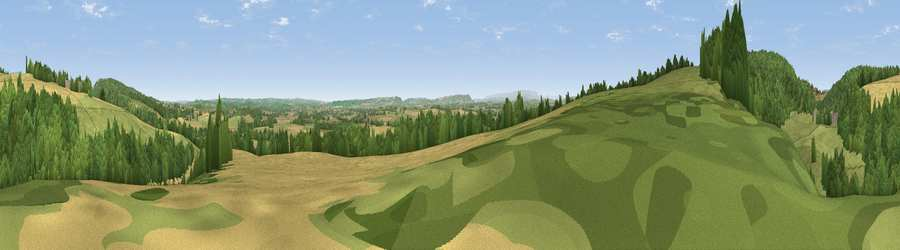

Viewpoint near Mortimers Cross
#11165 in England · top 29% of its area beats it · near Mortimers CrossThe view, rendered

A 360° render of this exact spot computed from the terrain model, tree cover and land cover — summer colours, afternoon light, calibrated against photographs of famous viewpoints. Real trees, hedges and buildings will differ in detail.
The panorama
Grey silhouette: terrain skyline in each direction (720 bearings, Earth curvature and refraction included). Dashed green: skyline with trees (+15 m) and buildings (+8 m) as obstacles. Blue strip: how far the ground is visible on each bearing.
Where the view opens
Wedge length = distance to the farthest visible ground on that bearing (vegetation-aware). Rings at 10, 25 and 50 km.
What fills the view
36% grassland · 35% woodland · 29% cropland
Angular shares of the visible panorama (visual magnitude), not map area. Landscape diversity 0.48 (0–1 Shannon).
Key numbers
More beautiful places nearby
The staircase of upgrades: each row has a higher view potential than everything closer. Driving times are estimates from straight-line distance, calibrated against real road routing — check an actual route before setting out.
| Place | Direction | Drive | Score |
|---|---|---|---|
| Viewpoint near Mortimers Cross | W · 1 km | ~2 min | 63.1 |
| Viewpoint near Aymestrey | NW · 2 km | ~5 min | 69.0 |
| Viewpoint near Shobdon | W · 4 km | ~9 min | 77.9 |
| Viewpoint near Leinthall Starkes | NNE · 6 km | ~13 min | 80.3 |
| Gatley Hill | NNE · 7 km | ~14 min | 82.6 |
| Titterstone Clee | NE · 23 km | ~38 min | 83.8 |
| The Lawley | NNE · 35 km | ~53 min | 85.8 |
| North Hill | ESE · 39 km | ~59 min | 86.8 |
52.26584, -2.86120 · source: screening · position refined by local search. Computed location — check access rights before visiting.